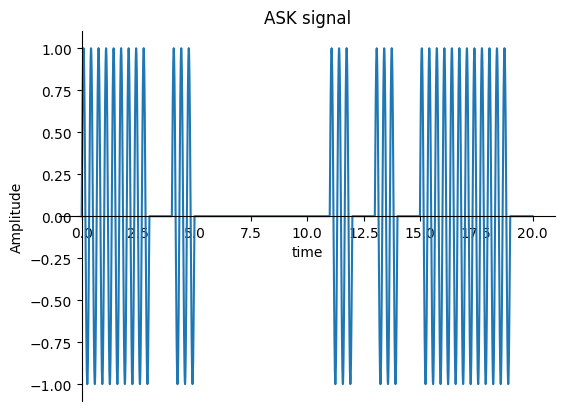
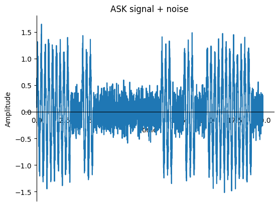
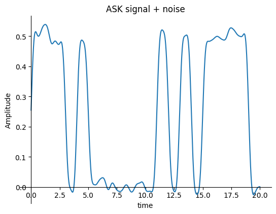
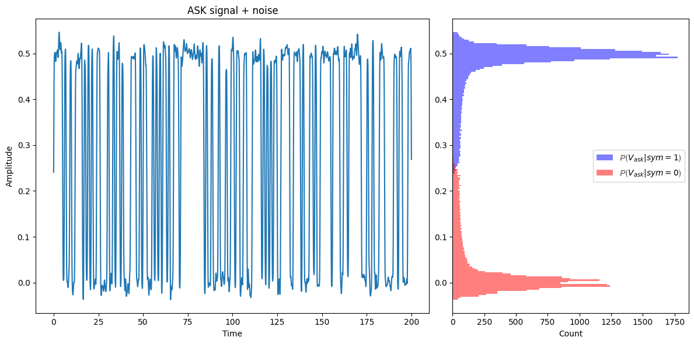
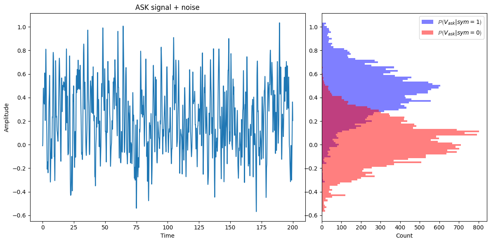

תורת הגילוי#
(על קצה המזלג)#
בהרבה מערכות המטרה היא לקבל החלטה מתוך מדידות. “כן” או “לא”.
דוגמאות:
מכ”ם - האם יש מטרה או לא
סונאר - אותו הדבר אבל עם אות אקוסטי
מערכת גילוי אש
מערכת אבטחה - נגיעה בגדר לדוגמא
תקשורת דיגיטלית - להחליט איזה סימבול נשלח
התרעה מפני רעידות אדמה
ניקח לדוגמא מערכת של תקשורת דיגיטלית שמשדרת באפנון BASK. המטרה היא להחליט עבור כל זמן סמל האם הוא “0” או “1”. כמובן שאם יש רק אות נקי אין שום בעיה ליצור אלגוריתם שמפריד בין שני הסימבולים האפשריים אבל מה קורה כשיש רעש?
כשאין רעש הסיגנל המתקבל נראה ככה: 
אבל עם רעש הסיגנל נראה יותר ככה: 
אחרי מעבר במקלט קוהרנטי (מסונכרן פאזה) נקבל סיגנל שנראה פחות אות יותר ככה: 
ועכשיו מגיע החלק המעניין. אנחנו צריכים להחליט האם קיבלנו 0 או 1 בכל זמן סימבול. תמיד נעשה את זה על ידי החלטה על סף כלשהו
צורה יותר נוחה להסתכל על הבעיה הזו היא לשאול מה הוא הערך של הגרף בהינתן שאנחנו יודעים מה הסימבול. בגלל הרעש אין תשובה אחת אלא התפלגות. לדוגמא במקרה שלנו

כאשר באדום אתם רואים את התפלגות הערכים של הסיגנל כאשר הסימבול הוא 1 ובכחול כאשר הסימבול הוא 0. האם אנחנו רוצים להעביר את הסף ב-0.5? זה תלוי מה אנחנו רוצים לעשות.
אבל באופן כללי כאן פעם ראשונה אנחנו נתקלים בפורמליזם שלנו בו יש התפלגות שונה לסיגנל בהינתן מה שאנחנו רוצים לגלות. נסמן את שתי ההתפלגויות:
ההתפלגות בהינתן “1” (יש סיגנל) - \(\mathbb{P}\left(V_{ask}|"1"\right)\)
ההתפלגות בהינתן “0” (אין סיגנל) - \(\mathbb{P}\left(V_{ask}|"0"\right)\)
במקרה שלנו נראה שאפשר להפריד ממש בקלות. מה קורה אם הרעש ממש גדל? 
עכשיו הרבה יותר קשה להחליט האם הסימבול הוא “0” או “1”.
נוכל עכשיו להגדיר שני מדדים מאוד חשובים נחשוב על הזמנים בהם משודר “1” בתור הזמנים בהם יש אירוע מסויים שאנחנו רוצים לגלות. לדוגמא שריפה או נגיעה בגדר וכו.
ההסתברות לגילוי - \(P_{d}=\intop_{V_{th}}^{\infty}\mathbb{P}\left(V|"1"\right)dV\)
ההסתברות להתרעות שוא - \(P_{FA}=\intop_{V_{th}}^{\infty}\mathbb{P}\left(V|"0"\right)dV\)
נשים לב שאם הסף שלנו \(V_{th}\) יהיה \(\infty\) נקבל 0 FA אבל גם בלי גילויים בכלל בעוד שאם הסף יהיה \(-\infty\) נקבל בדיוק הפוך. תמיד נגלה אבל גם תמיד יהיו התרעות שוא.
אנחנו רוצים לשאוף למצב בו \(P_{d}=1\) וגם \(P_{FA}=0\) אבל נשים לב שאם יש חפיפה בין פונקציות צפיפות ההסתברות לא נוכל לעשות את זה לא משנה מה הוא הסף \(V_{th}\) שנבחר
ROC Curve#
בגלל שאנחנו רוצים לבחון את הביצועים של מערכת הגילוי שלנו אנחנו רוצים למדוד אותה לא כתלות בסף אותו בחרנו. מה שלרוב עושים הוא בודקים את ביצועי המערכת בכל הספים האפשריים.
עבור כל סף נקבל שני מספרים \(P_{d}\) ו-\(P_{FA}\). הגרף אשר מציג את כל הנקודות האלו נקרא גרף ROC והוא נראה ככה:
בבירור הגרף צריך להיות מעל הישר בו \(P_{d}=P_{FA}\) משום שאחרת אפשר להחליף את הזמנים שבהם מתריעים עם הזמנים שלא מתריעים ולשפר את הביצועים.
אם יש שתי מערכות התרעה (כמו בתמונה) בהן אחת תמיד נמצאת מעל השנייה נוכל לומר שאחת טובה יותר תמיד מהשנייה. אבל זה לא תמיד המצב ולכן נחפש מדד של מספר שאומר לנו כמה מערכת גילוי היא “טוב”. מדד מקובל נקרא AUC (Area Under Curve)
וכשמו כן הוא:
AUC הוא השטח מתחת לגרף ה-ROC
דוגמה לחישוב FAR
הרבה פעמים במערכות מספר חשוב הוא כמות התרעות השוא. המספר שאנחנו נתנו \(P_{FA}\) הוא רק הסיכוי במדידה כלשהי לקבל FA. כדי לקבל את ה-FAR (False Alarm Rate) צריך להכפיל בקצב המדידות שלנו. ובאופן כללי אם אנחנו מודדים בקצב \(f\):
לרוב יהיה מספר איתו המערכת יודעת להתמודד. נגיד התרעת שוא אחת ביום, הוא אחת בחודש או אחת בשנה וכו. תלוי המקרה.
מהחסם הזה ניתן לחסום את \(P_{FA}\) וככה גם לבחור \(V_{th}\) מתאים.
גילוי אופטימלי - match filter#
אחת הבעיות הנפוצות בעיבוד אותות הוא זיהוי של אות ידוע מראש אך בזמן לא ידוע. ננסה לפתור את הבעיה עבור רעש לבן (אני אומר כאן בסוגריים שהרבה פעמים עושים תהליך שנקרא הלבנה של הרעש. כלומר מעבירים בפילטר שגורם ל-PSD להיות קבוע ורק אז משתמשים ב-match filter)
נתחיל עם הנחה מקלה שאנחנו רוצים להבחין בין שני מצבים.
קלטנו רק רעש - \(\mathcal{H}_{0}:r\left(t\right)=\xi\left(t\right)\)
קלטנו אות ורעש - \(\mathcal{H}_{1}:r\left(t\right)=s\left(t\right)+\xi\left(t\right)\)
מה נעשה כדי להבדיל בין השניים?
מה יקרה אם נסתכל על הפעולה:
נשים לב כי:
כמובן שאין לנו אף פעם אות אינסופי אבל בעיקרון \(\mathbb{E}\left[r\left(t\right)\cdot n^{\ast}\left(t\right)\right]\) הוא 0 אם זמן האינטגרציה הוא אינסופי.
נשים לב שמה שכתבנו היא פשוט מכפלה פנימית בין האות שלנו ובין האות \(s^{\ast}\left(t\right)\).
ננתח איך זה נראה בדגימה אמיתית. נניח שיש לנו סיגנל \(s\left[n\right]\) באורך \(N\) ורעש לבן גאוסייני \(\xi\left[n\right]\sim\mathcal{N}\left(0,\sigma^{2}\right)\) כאשר הפעולה שאנחנו מחשבים היא:
נסתכל על הביטוי \(\sum_{n=0}^{N-1}\xi\left[n\right]\cdot s^{\ast}\left[n\right]\) אפשר לחשוב עליו בתור ממוצע משוקלל של משתנים גאוסיינים בלתי תלויים.
הממוצע כמובן נשאר 0 משום ש:
ומה עם ה-\(Var\)?
כלומר ה-\(Var\) מוכפל ב-\(\sum_{n=0}^{N-1}\left(s\left[n\right]\right)^{2}\) נשים לב שזו הייתה בדיוק ההגדרה שלנו לאנרגיה של האות
קיבלנו לבסוף כי:
כאשר \(\xi_{N}\sim\mathcal{N}\left(0,\sigma^{2}\cdot E_{s}\right)\)
או אם ננרמל את התוצאה באנרגיה של האות:
ככל שהאות שלנו יותר חזק נקבל שהרעש קטן. בפרט סטיית התקן קטנה ב-\(\sqrt{E_{s}}\)
שימו לב שמכאן ממש נוח לחשב את \(P_{d},P_{FA}\) כתלות ב-SNR. עבור \(V_{th}\) שונים.
כאן אפשר להסביר מה זה אומר ש-match filter הוא אופטימלי. זה אומר שעבור כל \(P_{FA}\) כלשהו ב-SNR מסויים האלגוריתמיקה של match-filter נותן את ה-\(P_{d}\) הכי גבוה בין כל הדטקטורים האפשריים!
לקריאה נוספת אתם מוזמנים להתחיל מדף הויקיפדיה הזה
תנו לזה רגע לחלחל. כל דטקטור אחר יתן \(P_{d}\) נמוך יותר עבור אותו \(P_{FA}\) אי אפשר להיות טובים יותר!
אם רוצים לשפר את הביצועים יש לנו אפשרות אחת
לשפר את ה-SNR
מה אם לא יודעים את זמן הגעת האות? כלומר מה אם האות שמתקבל הוא:
\(\mathcal{H}_{1}:r\left(t\right)=s\left(t-t_{0}\right)+n\left(t\right)\)
אנחנו יכולים פשוט להריץ חיפוש. כלומר לנסות את כל הערכים האפשריים. איך עושים את זה?
כלומר פשוט מעבירים את הסיגנל דרך פילטר של \(h\left(t\right)=s\left(-t\right)\) ואז מחפשים את המקסימום באות.
מה האות שמתקבל? אז האמת שאנחנו כבר יודעים את התשובה. ניתן לחזור על אות החישובים אבל הפעם עם אינטגרלים וסינון רעשים במקום חישובים של תוחלת ושונות.
את הפעולה \(s\left(t-t_{0}\right)\ast s\left(-t\right)\) אנחנו כבר מכירים. זאת האוטוקורלציה של האות אבל מוזזת סביב \(t_{0}\). והמקסימום שלה הוא האנרגיה של האות.
ומה עם \(\xi\left(t\right)\ast s\left(-t\right)\) זה רעש שעבר פילטר. נוכל לשאול איך השתנה ה-PSD שלו. נגדיר \(\zeta\left(t\right)=\frac{\xi\left(t\right)\ast s\left(-t\right)}{E_{s}}\) ונקבל:
ואם אנחנו שואלים את עצמנו מה ההספק הממוצע שיש ברעש כדי לחשב SNR:
זה אומר שההספק הממוצע קטן ב-\(E_{s}\) כמו במקרה הבדיד.
נסכם:
אם יש לנו אות \(r\left(t\right)=s\left(t-t_{0}\right)+n\left(t\right)\) ואנחנו מעבירים אותו ב-match filter כלומר בפילטר \(h\left(t\right)=s\left(-t\right)\) נקבל אות:
\[r_{match}\left(t\right)=E_{s}\left(\frac{R\left(t-t_{0}\right)}{E_{s}}+\zeta\left(t\right)\right)\]כאשר ההספק הממוצע של הרעש הוא
\[\left\langle P_{\zeta}\right\rangle =\frac{\sigma^{2}}{E_{s}}\]והמקסימום של הסיגנרל שהוא לא הרעש הוא פשוט:
\[\max_{t}\frac{R\left(t-t_{0}\right)}{E_{s}}=\frac{R\left(0\right)}{E_{s}}=1\]זה אומר שאחרי match filter ה-SNR שלנו תלוי לינארית ב-\(E_{s}\) שזה נהדר! כי זה לא תלוי באמפליטודה שלנו אלא באמפליטודה בריבוע.
דוגמא - גילוי של מכ”ם#
נניח שאתם מכם שמשדר אות פולסי \(s\left(t\right)\) ומחכה לתשובה. המכ”ם מעביר את האות הנקלט ב-match filter ובודק אם המקסימום עובר סף \(V_{th}\) כלשהו.
נרצה לענות על כמה שאלות:
מה הם ה-\(P_{d},FAR\) של המערכת
אם אנחנו רוצים לחסום את ה-FAR איזה SNR אנחנו יכולים להרשות לעצמנו
נתחיל בלחשב את \(P_{d},P_{FA}\)
אם נסתכל על האות אחרי דגימה נקבל (בהנחה מקלה שזמן ההגעה של ההחזר הוא אחד מזמני הדגימה):
נניח לרגע שאיך שהמכ”ם עובד זה השהוא שולח פולס ואז מקשיב (ודוגם) במשך \(N\) דגימות. אחרי זה הוא שולח עוד פולס כדי לחפש את המטרה הבאה. בכל מקטע כזה באורך \(N\) אנחנו רוצים להחליט אם מצאנו מטרה או לא.
על כל מקטע כזה נריץ match-filter ואז ניקח מקסימום. כלומר:
כדי לחפש את \(P_{d},P_{FA}\) נצטרך לענות על השאלה איך מתפלג המספר \(r_{match}\) בכל אחד מהמקרים:
לא הכי פשוט לענות על השאלה מי הן ההתפלגויות משום שהרעש לא לבן אחרי הפילטר. אם לא היינו לוקחים max אלא מסתכלים על דגימה מסויימת היינו מקבלים ששתי ההתפלגויות הן גאוסייניות והחישובים היו קלים. די בקלות אפשר לעשות סימולציה למקרה הזה. מזמין אתכם לנסות וליצור עקומת ROC.
אנחנו רוצים ליצור את הפילטר האידאלי כלומר וקטור שאם אני אעשה איתו קונבולוציה אני אכפיל במלבן מושלם בתדר. המטרה שלכם היא ליצור אות סופי בגודל 100 אשר הפורייה שלו כמה שיותר קרוב למלבן בתדר. שימו לב שכאשר אתם עושים FFT לסיגנל שלכם אתם דוגמים רק 100 תדרים. אני ממליץ לרפד באפסים וככה לדגום יותר תדרים ולראות כמה הפילטר שלכם טוב. פונקציית המטרה היא למנם את המרחק מהחלון האידאלי בנורמת L1. מומנים לבדוק בעזרת פונקציית הניקוד הבאה (אני לא מתחייב על איזה pad_length אני אשתמש אבל הוא יהיה גבוה)